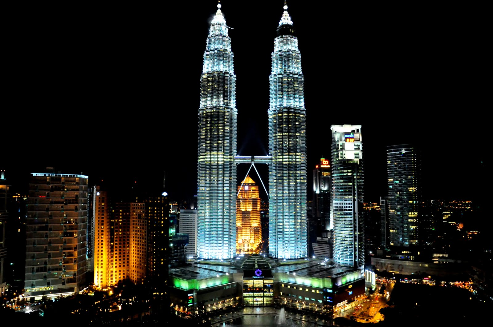
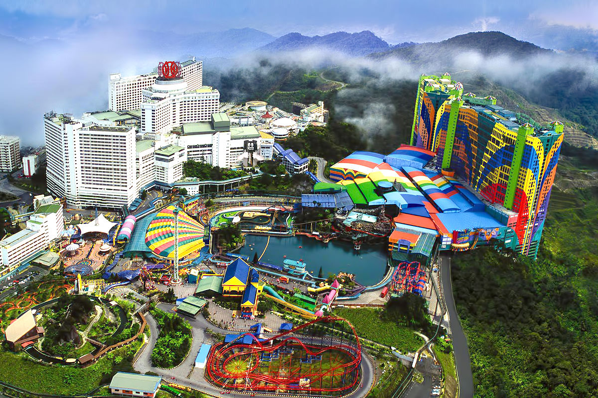
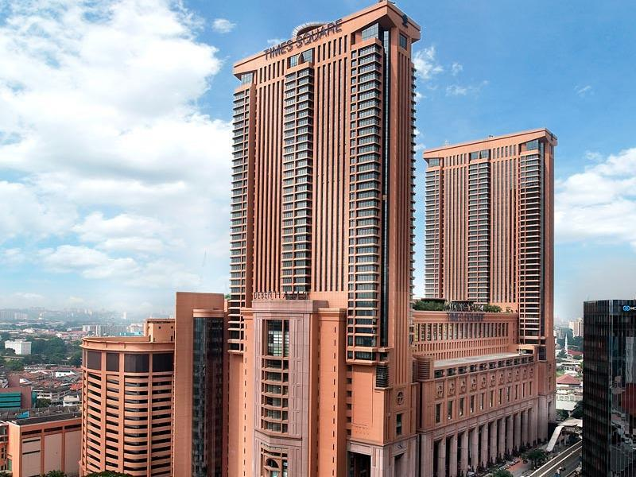

 The Petronas Towers, also known as the Petronas Twin Towers (Malay: Menara Petronas, or Menara Berkembar Petronas), aretwin skyscrapers in Kuala Lumpur, Malaysia. According to the Council on Tall Buildings and Urban Habitat (CTBUH)'s official definition and ranking, they were the tallest buildings in the world from 1998 to 2004 and remain the tallest twin towers in the world. The buildings are a landmark of Kuala Lumpur, along with nearby Kuala Lumpur Tower. The towers were designed by Argentine architect Cesar Pelli. They chose a distinctive postmodern style to create a 21st-century icon for Kuala Lumpur. Planning on the Petronas Towers started on 1 January 1992 and included rigorous tests and simulations of wind and structural loads on the design. Seven years of construction followed at the former site of the original Selangor Turf Club, beginning on 1 March 1993 with excavation, which involved moving 500 truckloads of earth every night to dig down 30 metres (98 ft) below the surface
 Genting Highlands (Malay: Tanah Tinggi Genting), otherwise known as Resorts World Genting, is a hill resort in Malaysiadeveloped by Genting Group. The hill resort is at an average elevation of 1,740 metres (5,710 ft) within the Titiwangsa Mountains on the border between the states of Pahang and Selangor of Malaysia. Resorts World Genting is operated by Genting Malaysia Berhad (formerly known as Resorts World Bhd), which also operates Awana chain of resorts and hotels. It is accessible by car from Kuala Lumpur in one hour, or also accessible by a cable car called Genting Skyway (3.38 kilometres (2.10 mi))[1] which at its opening was the world's fastest and South East Asia's longest gondola lift.
 Berjaya Times Square is a 48-storey, 203 m (666 ft) twin tower, hotel, condominium, indoor amusement park and shopping centre complex in Bukit Bintang, Kuala Lumpur, Malaysia. It was opened in October 2003 by the 4th Prime Minister of Malaysia, Dato Sri Dr Mahathir bin Mohamad. The development is currently the ninth largest building in the world and has also been tagged as the "world's largest building ever built in a single phase", with 700,000 m2 (7,500,000 sq ft) of built up floor area.[7] This building consists of a shopping mall, business office's and leisure centre with over 1000 retail shops, 1200 luxury service suites, 65 food outlets and entertainment attractions such as Berjaya Times Square Theme Park and GSC MAXX (formerly IMAX) 2D and 3D theatre. In April 2005, Borders Group opened its first franchise store here which was the largest Borders store in the world at the time. However, due to the 2010 economic downturn it has since been downsized into a smaller operation called Borders Express The Kuala Lumpur Monorail's Imbi station is linked to the building by a footbridge